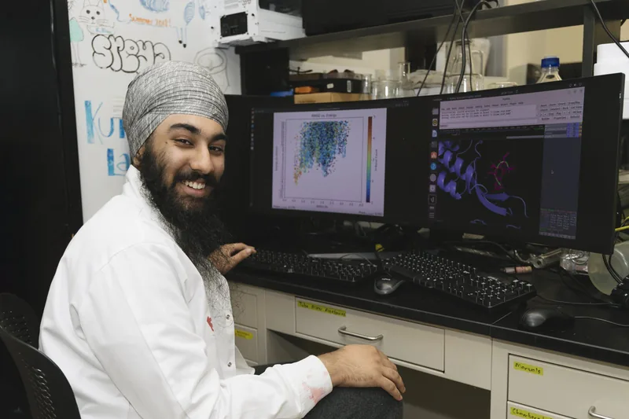

Science
How do you design a peptide to do one specific thing to one specific target?
- A cyclic peptide for multiple sclerosis2026Published, Eur. J. Med. Chem.
- A cyclic peptide male contraceptive2023–presentManuscript and patent application in preparation
- BAGEL: searching biomolecular energy landscapes2026–presentOngoing
- Reducing biophysical neuron models2026–presentOngoing
- Amyloid aggregation as a self-exciting process2025–2026Concluded May 2026